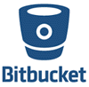

Github Alternatives
GitHub is a code hosting tool that is widely used for version control. The tool allows developers to work together on multiple projects. However, it's GUI is could be very confusing. So, here is a curated list of Top Source Code Repository Tools that can replace Github. This list includes commercial as well as an open-source tool with popular features.
-
1.TaraVault
TaraVault is Inflectra’s free cloud-based source code management solution for enterprises and teams of all sizes.
Features:
- The ability to link requirements, tasks, defects, and issues to source code files and revisions for maximum traceability
- Integrated ALM and issue-tracking for your projects
- Source code browsing, inline code diffs, and pull request management
- Viewing of CI builds and verification of the code changes included in each CI build
- Additional plugins that extend TaraVault’s core functionality.
-
2.Bitbucket
Bitbucket is version control tool developed by Atlassian. It is more than just Git code management. Bitbucket is one of the best alternatives to GitHub which allows the team to plan projects, collaborate on code, test, and deploy.
Features:
- Free unlimited private repositories
- Best-in-class Trello & Jira integration
- Allows you to build quality software with code review
- Helps you to secure your workflow
- Bitbucket lets you build, test and deploy with integrated CI/CD
-
3.SourceForge
SourceForge is an open source development and distribution platform. The tool is hosted on Apache, Allura, and supports many different projects. Users can select either Git, Mercurial as their version control system.

Features:
- Extensive worldwide mirror network
- Integrated Issue Tracking
- This GitHub alternative open source allows browser-based code browsing
- You can download statistics by platform, over time, and by region.
- This alternative to GitHub supports forums, blogs, and mailing lists
-
4.Gogs
Gogsis another GitHub alternative which makes the easiest and faster way of setting up self-hosted Git services. With the help of this version control tool, you can perform independent binary distribution across various platforms.
Features:
- Gogs runs anywhere can compile for Windows, Mac, Linux, etc.
- Excellent performance and efficiency
- Gogs has minimal requirements which allow you to run on an inexpensive Raspberry Pi
-
5.Gitbucket
Gitbucketis a high extensibility open source tool for hosting source code for the software development process. It offers a set of tools and feature which allows developers to easily manage project code.
Features:
- Repository Viewer
- Pull Request
- Issue tracker
- Documentation, and wiki
- Offers plugin system to extend its core features